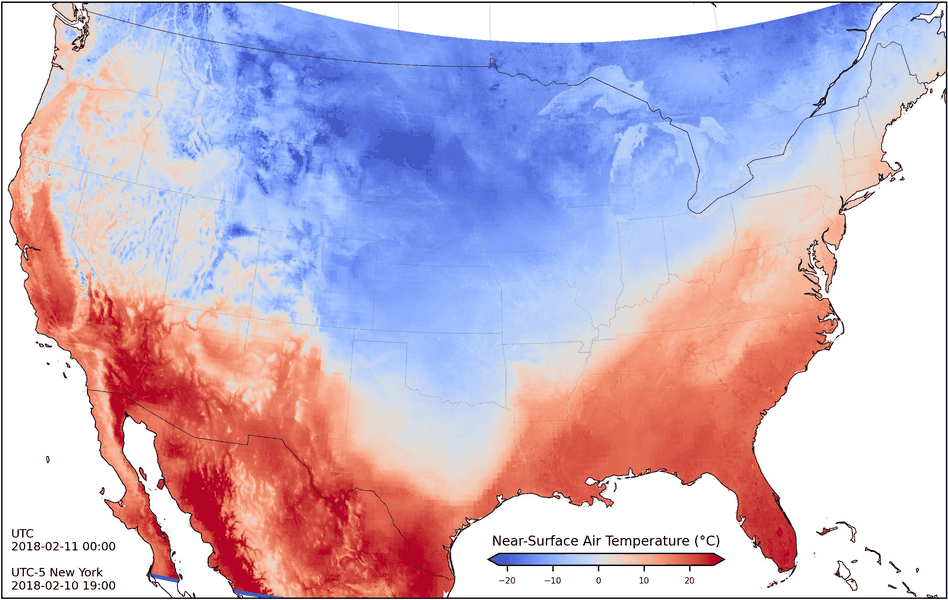
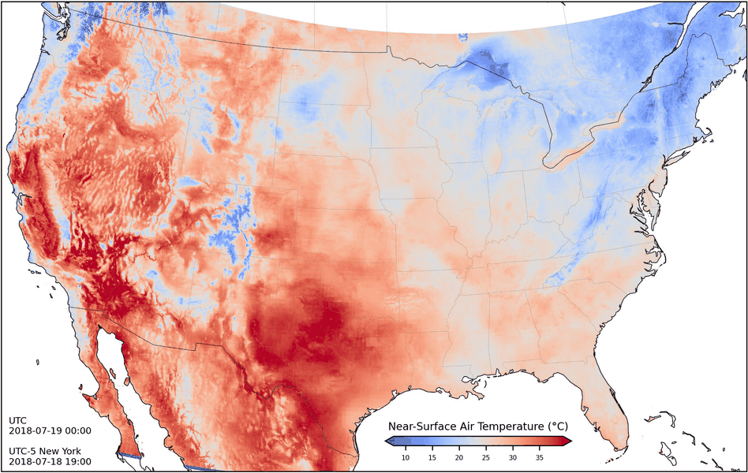

Hourly Air Temperature Mapping at 2 km Resolution in the United States (2018-2024) Using Physics-Guided Deep Learning
GitHub Repository: HourlyAirTemp2kmUSA
Download Dataset: Dataset at
Zenodo
Visualization Code: Code to read and visualize data
This page provides the near-surface air temperature dataset across the Contiguous United States (2018-2024) at 2 km resolution, generated using physics-guided deep learning with uncertainty quantification.
Dataset Description
- Hourly air temperature at 2 km resolution for CONUS, 2018-2024.
- Data range: 0-65535 (65535 = no data).
- Conversion: Kelvin = value * 0.00341802 + 149; Celsius = Kelvin - 273.15; Fahrenheit = Celsius * 9/5 + 32.
- Mean predictions available at Zenodo.
- Uncertainty data sample (2018, ~35GB) at OSF. Contact author for full uncertainty dataset.
Visualization
Use visual.py to render hourly temperature data with animations.
Previews
February 11, 2018 
July 19, 2018 
Want to know more?
Liu, Shengjie Kris, Siqin Wang, and Lu Zhang. "Uncertainty-Aware Hourly Air Temperature Mapping at 2 km Resolution via Physics-Guided Deep Learning." arXiv preprint arXiv:2509.12329 (2025).© 2025 Shengjie Kris Liu. Licensed under CC BY 4.0.